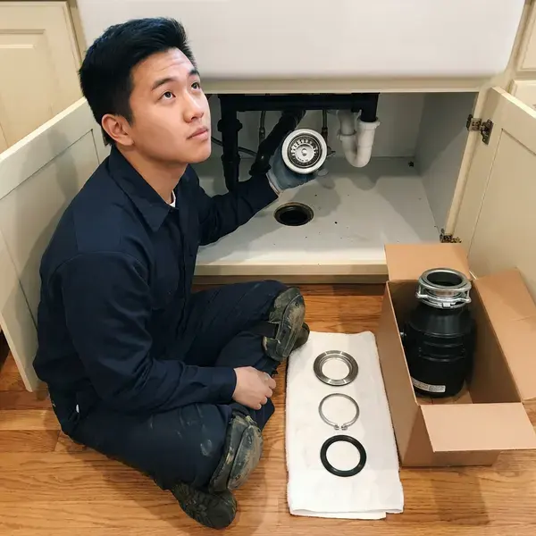

Garbage Disposal Installation in Rancho Cucamonga, CA
Get professional garbage disposal installation services in Rancho Cucamonga, CA from FKM Plumbing. We handle everything from basic models to high-powered units for your kitchen.
- Proper Electrical Hookup
- Dishwasher Connection Included
- Quick Disposal Installs
- Upfront Pricing

Get Your Disposal Installed Right the First Time in Rancho Cucamonga, CA.
Our team is ready to provide fast, dependable garbage disposal installation.
Trusted Garbage Disposal Installation for Homes in Rancho Cucamonga, CA
At FKM Plumbing, we understand the importance of a properly functioning garbage disposal for modern kitchens in Rancho Cucamonga. Our team provides professional garbage disposal installation, handling all electrical and plumbing connections to meet local codes and support long-lasting performance.
Our expertise includes:
- Install continuous-feed and batch-feed disposals from leading brands
- Experience with various power levels and capacities
- Connect dishwasher drains with air gaps or high loops

Additional Kitchen Plumbing Services in Rancho Cucamonga, CA
Our kitchen plumbing services in Rancho Cucamonga, CA cover sinks, disposals, dishwashers, and grease traps so your kitchen keeps running without backups or leaks.


Customers
Why Choose FKM Plumbing for Garbage Disposal Installation in Rancho Cucamonga, CA?
Installing a garbage disposal correctly is key for its longevity and performance, preventing leaks or electrical hazards. Our team makes sure every installation meets the highest standards of safety and function.
- Quality Brands, We work with well-reviewed garbage disposal brands for durability and performance.
- Full Testing, Every install is run with water and inspected for leaks.
- Leak Prevention, We carefully check all seals and connections to prevent future leaks and water damage.
Citywide Coverage
We pride ourselves on our wide service area, ensuring that quality garbage disposal installation is accessible to all residents in Rancho Cucamonga. Our local plumbers are always nearby, ready for your call.
Experienced Team
Our team consists of highly trained and experienced plumbers who focus on kitchen appliance installations, including garbage disposals. They understand the details of various models and kitchen setups.
Safety-First Approach
When installing a garbage disposal, FKM Plumbing protects both the safety of your home's electrical system and your family. We perform careful checks for proper grounding and water tightness, giving you confidence in your new appliance's safe operation.
Trusted Certified Rancho Cucamonga Plumbing Services Professionals
At FKM Plumbing, we take pride in providing licensed, certified plumbing services throughout Rancho Cucamonga, CA. Backed by recognized industry credentials, our experienced plumbers combine technical skill with genuine customer care. Whether it is repair, installation, or maintenance, we follow strict safety and quality standards to deliver long-lasting results you can trust.
Call Us Now PHCC Plumbing Contractor Recognition
PHCC Plumbing Contractor Recognition Better Business Bureau (BBB) Accreditation
Better Business Bureau (BBB) Accreditation Angi Certified Pro
Angi Certified Pro ISO 9001 Quality Management Certification
ISO 9001 Quality Management CertificationDependable Garbage Disposal Installation Services in Rancho Cucamonga, CA
InSinkErator Disposal Installation in Rancho Cucamonga, CA
InSinkErator is the most common brand we install, from the Badger series to the quiet Evolution line. We use the brand's quick-lock mounting and follow its specs for wiring and drains. Evolution models have sound insulation and multi-stage grinding. We help you pick the right model and register the warranty.

High-Capacity Garbage Disposal Installation in Rancho Cucamonga, CA
If you're upgrading to a 1 horsepower or continuous-feed garbage disposal, FKM Plumbing has the expertise. These powerful units are great for active kitchens in Rancho Cucamonga, CA but require careful installation to handle heavier loads. We confirm your electrical circuit can support the increased demand and make sure the discharge pipe is correctly sized to prevent clogs with larger food waste particles. We work with brands like InSinkErator Evolution and Waste King Legend.
Batch Feed Disposal Installation in Rancho Cucamonga, CA
For homeowners in Rancho Cucamonga, CA who prefer batch-feed garbage disposals, which operate only when the stopper is inserted, we offer dedicated installation. These units are usually favored for their safety features and can be more powerful. Our plumbers ensure correct wiring and plumbing for these models, making sure the unit works securely and efficiently.
InSinkErator Garbage Disposal Installation in Rancho Cucamonga, CA
FKM Plumbing specializes in the installation of InSinkErator garbage disposals, a popular choice among homeowners in Rancho Cucamonga, CA for their reliability and range of models. Whether it's an Evolution series unit or a Badger model, our technicians are familiar with the specific installation requirements to ensure optimal performance and longevity.
Garbage Disposal Replacement and Upgrade in Rancho Cucamonga, CA
Replacing an old, failing garbage disposal with a new, more efficient model is a common request in Rancho Cucamonga, CA. FKM Plumbing handles the complete replacement process, from safely disconnecting and removing the old unit to installing your new one. We can also help you upgrade to a quieter or more powerful model, confirming compatibility with your existing plumbing and electrical setup. This often involves checking for corrosion in older drain lines.
Commercial Garbage Disposal Installation in Rancho Cucamonga
Restaurants and commercial kitchens in Rancho Cucamonga require heavy-duty garbage disposals designed for high-volume waste. FKM Plumbing provides professional installation of commercial-grade units, including those with higher horsepower and larger capacities. We ensure all installations meet health code standards and can withstand the rigors of commercial use.
Garbage Disposal Installation Cost Factors in Rancho Cucamonga, CA
Costs depend on the disposal model, whether a new outlet or switch is needed, and the drain layout. A simple install on a ready sink is the most affordable. Adding electrical or reworking drains adds time. We provide a clear quote that includes the unit and labor.

Air Switch Disposal Installation in Rancho Cucamonga, CA
Air switches let you start the disposal with a button on the sink or countertop. This avoids drilling for a new wall switch. We install the button and control box under the sink. Air switches are popular in kitchen remodels and islands.
Garbage Disposal Installation Near Me in Rancho Cucamonga, CA
When you search for 'garbage disposal installation near me' in Rancho Cucamonga, CA, FKM Plumbing is your trusted local expert. Our strategically located teams allow us to respond quickly to your installation needs, providing prompt and efficient service right to your doorstep.
When you want a disposal installed quickly, a local plumber makes it easy. Our team works in Rancho Cucamonga every day and carries popular disposal models. Most installs are finished in about two hours.
FKM Plumbing at a Glance
- Licensed and insured plumbers serving Rancho Cucamonga, CA
- 24/7 emergency service with same-day scheduling
- Clear written estimates, no hidden fees
- 4.8-star rated by 754+ Southern California customers
Rancho Cucamonga Map
Rancho Cucamonga Information
- Population
- 174,405
- Area codes
- 909/951/626
- Service area
- Rancho Cucamonga and communities within 40 miles
- Nearby
- Upland, Fontana, Ontario, Rialto
Careful garbage disposal installation is important for homes in Rancho Cucamonga, CA. Municipal water across much of Southern California is hard, leaving white scale on faucets, showerheads, and inside water heater tanks. A correctly mounted unit lasts longer against mineral buildup and daily wear.
Expert Services
Trust our professionals for reliable FKM Plumbing solutions in Rancho Cucamonga, CA.
Our Specialized Plumbing Services in Rancho Cucamonga, CA
At FKM Plumbing, we provide a complete range of plumbing services across Rancho Cucamonga, CA. From leak detection to full system installations, our team ensures fast, precise, and affordable service for both residential and commercial properties. Explore our core services below:


How Our Garbage Disposal Installation Process Works in Rancho Cucamonga, CA
At FKM Plumbing, we make garbage disposal installation simple and stress-free for homeowners in Rancho Cucamonga. Our process is designed for efficiency and your complete satisfaction.
Request a Quote
Call (213) 871-0701 to discuss your kitchen and disposal needs. We help you choose a model and schedule the install.
Prepare the Sink
We check the sink flange, drain and electrical supply. Any needed outlet or switch work is coordinated before installing.
Install and Test
We mount the disposal, connect drains and wiring, and run it with water. Then we check for leaks and explain how to use it.
Frequently Asked Questions About Garbage Disposal Installation in Rancho Cucamonga
The cost for garbage disposal installation in Rancho Cucamonga, CA typically ranges from $200 to $500, not including the unit itself. This varies based on the unit's complexity, whether it's a replacement or a new installation requiring electrical work, and any necessary plumbing modifications. We provide clear, upfront pricing before any work begins.
Most installs take one to two hours. Adding electrical or reworking drains can take a bit longer.
For many families, yes. It cuts down on food waste odor in the trash, especially in warm weather, and makes kitchen cleanup easier, as long as you avoid grease and fibrous foods.
Most disposals carry manufacturer warranties from two to ten years, and we stand behind our installation labor.
While some homeowners attempt DIY installation, it's generally recommended to hire a professional. Improper installation can lead to leaks, electrical hazards, and damage to your plumbing system. Our licensed plumbers ensure a safe, code-compliant, and reliable installation.
To prolong the life of your new garbage disposal, avoid putting hard items like bones, fruit pits, or fibrous vegetables down the drain. Always use plenty of cold water while operating the disposal and run it regularly, even if there's no waste, to prevent rust and keep components moving.
Continuous feed disposals operate with a wall switch and can run while you're adding food waste. Batch feed disposals operate only when a special stopper is inserted, making them a popular choice for safety reasons, especially in homes with young children. We install both types, catering to your preference.
Yes, but choose a septic-friendly model and be careful about what goes down it. We can suggest options for septic homes.
What People Are Saying About Our Plumbing Experts?

Emily R.
I called FKM Plumbing for plumbing repair, and the technician was fast, polite, and thorough. They explained the problem clearly and fixed it the same day. I will definitely hire them again. Highly recommended!
Plumbing Repair · Jurupa Valley, CA
James P.
Our commercial plumbing system had a leak under the sink, and FKM Plumbing handled it professionally. The plumbers arrived quickly and restored everything without disruption to our customers.
Commercial Plumbing · Rialto, CA
Patricia H.
We had a slab leak that two other companies could not find. FKM Plumbing located it in under an hour, explained our options, and the price matched the quote to the dollar.
Slab Leak Repair · Rancho Cucamonga, CA
Mark T.
When our office needed drain cleaning, FKM Plumbing provided quick, reliable service. The plumber arrived on time and made sure every drain flowed perfectly before leaving. Very satisfied.
Drain Cleaning · Ontario, CA
Daniel K.
A pipe burst at 11 pm and they actually answered. The plumber showed up within the hour, shut everything down, and had us back to normal the next morning. Could not ask for more.
Emergency Plumbing · Jurupa Valley, CA
Sofia M.
Two new toilets installed in one visit, no mess left behind, and the tech even adjusted a faucet he noticed was dripping. Fair pricing and really friendly.
Toilet Installation · Rialto, CA